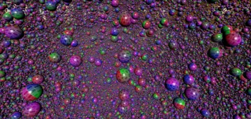

3D > Optimization > InstancedMesh
InstancedMesh Sphere - RedGPU WebGPU Example
Benchmarks InstancedMesh rendering performance with massive Sphere instances.
단일 드로우콜로 대량의 Sphere를 그리는 InstancedMesh 예제입니다.

3D > Optimization > InstancedMesh
Benchmarks InstancedMesh rendering performance with massive Sphere instances.
단일 드로우콜로 대량의 Sphere를 그리는 InstancedMesh 예제입니다.
